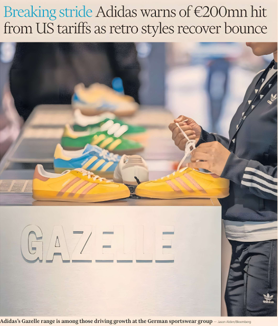

By Florian Muller — Frankfurt
Adidas has warned that US tariffs will increase its costs by up to €200mn in the second half of the year, even as surging demand for its retro trainers, such as the Samba and Gazelle, continues to power growth at Germany's largest sportswear group.
Chief executive Bjorn Gulden said yesterday that the tariffs had already cost the company “double-digit euro millions” in the second quarter, and warned the measures could further hurt consumer demand if they triggered “major inflation”.
The levies stem from US import duties on some of Adidas’s manufacturing hubs. US tariffs for Vietnam, where Adidas makes 30 per cent of its goods for the US market, rose 20 percentage points. Tariffs for Indonesia, which makes 23 per cent of US supply, rose 19 percentage points.
Gulden said the company would not alter prices in the US until it knew US President Donald Trump’s final tariff rates, which are expected to be announced next month. He said Adidas would rather boost prices for new products as they were “easier to increase than products which already exist”, and would not change them on popular items for “as long as we can”.
Gulden said that under normal circumstances Adidas would have raised its full-year guidance after a strong start to the year. But “we feel the volatility and uncertainty in the world does not make this prudent”, he said.
Shares were 10.7 per cent lower yesterday and down more than a fifth over the past year. Investors are gauging if the brand can continue closing the gap with US rival Nike after the success of retro trainers more than offset the absence of revenues from the defunct Yeezy line with rapper Ye.
Citi analysts highlighted that this was the first quarter without a pre-release of stronger than expected results in more than 18 months.
Adidas is maintaining its forecast of high single-digit percentage growth in currency-neutral revenues for the full year and an operating profit between €1.7bn and €1.8bn — below the €2.1bn expected by analysts.
In the second quarter, the group increased net sales by 2.2 per cent year on year to nearly €6bn, despite negative currency effects from a weak renminbi and dollar reducing revenues by €300mn.
Revenues climbed across all regions and product categories, led by a 17 per cent jump in clothing sales and continued momentum in its retro lines.
In Europe, revenues rose just 4 per cent, slower than analysts expected.
Sales picked up again in July, with Gulden expecting growth to return to double digits in the coming quarters.
Operating profit surged 57.7 per cent to €546mn in the second quarter.